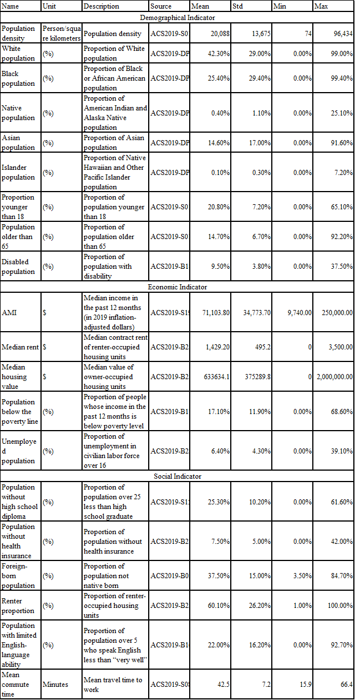

Research Methodology and Data
Research Design and Hypothesis
As Figure 2 shows, to study park equity three aspects of parks should be considered in the research. 1) Park proximity means the distance to parks. It will not be analyzed independently because it is the precondition of the analysis of the other two aspects and previous research has analyzed it in New York City. In this thesis, park proximity is considered only by analyzing parks within network walkable distance instead of straight-line distance. Given that PlaNYC (City of New York 2011) claims to ensure that all New Yorkers live within a 10-minute walk of a park, the network walkable distance is 800 meters in this thesis. 2) Park acreage measures the park size that can be accessed by each person within an 800-meter network buffer. It is quantified by park area per capita in square meters. 3) Park safety is the only factor that this research focuses on related to park quality. It measures crime behaviors in parks within an 800-meter network buffer. To avoid extremely high crime numbers caused by too large park size, this thesis considers crime density within parks as a representation of park safety. It is quantified by the number of crimes per square kilometer. The higher park crime density is, the worse park safety is.

There are three steps before reaching a conclusion, which are data collection, dependent variable measurement, and regression model building, as shown in Figure 3. 1) The data collection section includes the collection of independent variables and essential data to calculate the dependent variables. 2) The dependent variables section includes two measurements—park acreage and park safety—since the research focuses on two aspects of park equity. Park acreage is intuitively quantified by park area per capita within the 800-meter network analysis buffer. Park safety is quantified by an opposite index, the number of criminal behaviors in a fixed period per square kilometers within the 800-meter network analysis buffer. 3) In the regression model–building section, two models will be built based on the independent variables and either park acreage or park safety. The result of two regression models will show the association between independent variables and park acreage or park safety. There might be inequity for vulnerable groups if corresponding indicators—for example, minority races or the proportion of the population below the poverty line—have negative associations with smaller park size or higher park crime density.

Research Scope of and Analysis Unit
Census tracts in New York City are the major geographic unit of analysis. However, considering that the width of census tracts, measurements based on the centroid of census tracts will distort the walkable area of people in the census tract. Thus, the dependent measurement section will first calculate the components of dependent variables on the lot level to minimize error. Finally, the components of dependent variables will be aggregated on the census tract scale for later analysis along with all census tract scale independent variables.
The main research time scope is the year 2019. Unless otherwise specified, all data in this thesis are derived from the 2019 data set. Data from after this time are not used because 2019 is the most recent data available during the working of this thesis. The Census Bureau delayed the 2020 ACS data release, which was originally targeted for December 2021, because of the impacts of the COVID-19 pandemic on data collection.
a) Independent Variables Collection
Vulnerable people refers to those who are or may be in need of social care services because of mental or other disability, age, or illness and who are or may be unable to take care of themselves or to protect themselves against harm or exploitation. This definition is referenced from the definition of a vulnerable adult in “No Secrets: Guidance on Protecting Vulnerable Adults in Care” (UK Department of Health and Social Care, 2000). In this research, vulnerable people include not only people who need social services—such as senior people, younger people, unemployed people, people below the poverty line, and disabled people—but also people who are likely to suffer exploitation, such as minorities, people without a high school diploma, limited English speakers, long-distance commuters, foreign-born people, and renters.
There are 20 independent variables (Table 1) chosen to describe the characteristics of census tracts. They demonstrate the composition of census tracts from race composition, demographic, and socioeconomic perspectives. Some of them are indices to define the quantity of vulnerable people, such as the proportion of races, disabled people, and senior or younger people. The others are indices to define the other relevant characteristics of neighborhoods, such as population density and housing value or rent.
Considering that some census tracts have incomplete data or are not suitable for this analysis because of their spatial characteristics, the data collection step excludes census tracts with incomplete independent variable data, such as census tracts with zero population and some atypical census tracts, such as Riker’s Island, a prison with a high population. Finally, there are 2,082 suitable census tracts, which include 99.35% of the population of New York City for later analysis. The visualization of all independent variables is attached as appendix at the end of the thesis.
b) Dependent Variables Collection
To be continue